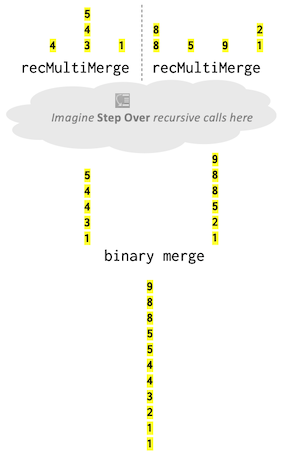

Binary merge
The binary merge operation takes as input two sorted sequences which are to be merged into one combined sorted sequence. Merging is the backbone of many different sorting tasks (some of which we will explore later in the course), making this operation useful in a broad array of applications.
Implementing merge
Your first task is to write the function
Queue<int> binaryMerge(Queue<int> one, Queue<int> two)
which performs an iterative binary merge. Here are the specifications:
- The elements of Queues
oneandtwoare expected to be in increasing order from front to back. The returned result is a Queue containing the combined elements fromoneandtwoin increasing order from front to back. - The Queues
oneandtwoare passed by value, sobinaryMergereceives copies of the input queues and can freely modify them. There is no requirement on the ending state of those queue copies. binaryMergetakes in two Queues and returns a Queue. You are not to use any additional data structures (e.g. no Vectors, no arrays, and so on)- The two Queues are not required to be the same length. One could be enormous; the other could be a single element. It is also possible that one or both of the input queues is empty. Be sure your function handles all possibilities – write as many test cases you need to confirm!
- The queues possibly contain duplicate values. There is no special-case handling of duplicates. Merging
{1, 2, 2}with{1, 3}results in{1, 1, 2, 2, 3}. - A slapdash copy/paste approach to writing merge can result in messy and repetitive code. Instead, work to structure your code to unify the common parts rather than repeat yourself. There is a tidy and compact solution that is quite lovely, and we know you can achieve it! Hint: think about breaking the task down into two subtasks - choosing which element to handle next and then processing it.
- Important: you must implement binaryMerge using iteration, not recursion.
- Although it is possible and even quite elegant to solve recursively, the cost of one stack frame per element being merged is much too high to bear and would cause the function to be unable to merge larger sequences. The limit on the maximum length sequence will depend on your callstack. Review the information you gathered in the warmup and answer the following questions in
short_answer.txt:
- Although it is possible and even quite elegant to solve recursively, the cost of one stack frame per element being merged is much too high to bear and would cause the function to be unable to merge larger sequences. The limit on the maximum length sequence will depend on your callstack. Review the information you gathered in the warmup and answer the following questions in
Q8. Give a rough estimate of the maximum length sequence that could be successfully merged on your system assuming a recursive implementation of binaryMerge.
Q9. What would be the observed behavior if attempting to recursively merge a sequence larger than that maximum?
Enforcing merge preconditions
The specification for binaryMerge states that the two input queues are in sorted order. However we've seen that blithely assuming all inputs confirm to the precondition can lead to trouble (such as the warmup when assuming the factorial of would be non-negative). Rather than make assumptions, a better practice is to verify the precondition and raise an error if violated.
Add validation to your binaryMerge function to confirm that the input queues are sorted. If an out-of-order element is detected, call the error function with a descriptive message to report the problem.
We propose two possible approaches for validation. You may implement either (or a variant of your own choosing):
- A straightforward approach is to confirm the order of the input queues in a separate pass before merging. Write a helper function that inspects the contents of a single queue and raises an error if an element is found out of order. Call the helper twice, one on each of the two input queues.
- This alternative is a little trickier, but does not require an extra pass, making it more efficient. In this approach, you confirm the sorted order while retrieving values from the input queues during the merge operation. If you encounter an element that is out of order, raise an error. If you choose this approach, you do not need a helper function, as the error checking will be built into the logic of the merge operation itself.
Add a sufficient number of STUDENT_TEST cases to thoroughly vet binaryMerge. You will make heavy use of binaryMerge and you want to put in the time to test your code now so that you can use it later with confidence. In addition to comprehensive testing on many varying valid input queues, we strongly recommend that you confirm that your error handling correctly rejects any invalid queue (i.e. not properly sorted). Your future self will thank you!
Analyzing binaryMerge
The SimpleTest TIME_OPERATION macro is sued to measure the amount of time it takes to execute a function call. To refresh your memory, an example code snippet is shown below.
PROVIDED_TEST("Time operation vector sort") {
Vector<int> v = {3, 7, 2, 45, 2, 6, 3, 56, 12};
TIME_OPERATION(v.size(), v.sort());
}
The test results display the execution time measured in seconds:
Time operation vector sort
Line 174 Time v.sort() (size = 9) completed in 0 secs
In Assignment 1, you timed the same operation over a range of different input sizes and then quantitatively reasoned about the growth of the amount of work that is done relative to the input size. Now, equipped with your knowledge of formal algorithmic analysis tools like Big-O, you will be able to use these time trials to identify and prove the Big O of the real algorithms that you just implemented.
First, predict what you expect to be the Big O of your binaryMerge function. Formally you should express your Big O in terms of N, where N is the size of the final merged queue. Alternatively, you can think of N as the sum of the sizes of the input queues one and two.
Add a STUDENT_TEST to run time trials on binaryMerge on four or more different sizes, each size being twice as large as previous. If you choose a range of sizes that are too small, the trials complete in subsecond time and measurements will be very noisy; sizes that are too large can take a long time to complete. Experiment to find a range of sizes that hit the "sweet spot" for your system – large enough to be fairly stable but small enough that the largest completes in around a minute.
Pro tip: Use a loop! The warmup showed using a loop within a test case to do a sequence of tests. A loop over a range of sizes can be similarly convenient way to do a sequence of TIME_OPERATION time trials.
In short_answer.txt:
Q10. Include the data from your execution timing and explain how it supports your Big O prediction for binaryMerge.
Multiway merge
Binary merge always receives exactly two sorted sequences to merge. A multiway merge or k-way merge is an extension of binary merge. Instead of two input sequences, a multiway merge receives K sorted sequences to merge into one sorted output.
In the starter code, we provide a naiveMultiMerge that is built on top of your binaryMerge. The code is shown below. It iterates over all input queues, repeatedly calling binaryMerge to do a pairwise merge of each queue into the result.
Queue<int> naiveMultiMerge(Vector<Queue<int>>& all) {
Queue<int> result;
for (Queue<int> q : all) {
result = binaryMerge(q, result);
}
return result;
}
Testing and analyzing naiveMultiMerge
- Assuming a correct implementation of
binaryMerge, our providednaiveMultiMergeworks correctly. Run the provided tests to confirm this. - The function may be asked to merge 0 queues (represented by an empty
Vector) or many empty queues (represented by aVectorof empty queues). Trace through the provided implementation and predict how it would handle such input. Add at least 2-3 test cases to confirm that the function behaves as expected in these scenarios. - Now, predict what you expect to be the Big O of the
naiveMultiMergefunction. Formally, you should express your Big O in terms of two quantities that can vary in size. The first isN, whereNrepresents the total number of elements in the final merged queue (alternatively, you can think of this as the total number of elements across all provided sequences that you've been asked to merge). The second isK, whereKrepresents the total number of distinct individual sequences that you are being asked to merge. Then, use the timing operation to measure the execution time over 5 or more different sizes ofN(keepingKfixed) and over 5 or more different sizes ofK(keepingNfixed).- When choosing sizes, keep in mind that
Kis the number of queues andNthe total number of elements. Sensible values forKshould always be <=N. - Using a loop over a range of sizes can be handy here!
- When choosing sizes, keep in mind that
In short_answer.txt:
Q11. Include the data from your execution timing and explain how it supports your Big O prediction for naiveMultiMerge.
Divide and conquer to the rescue
The above implementation of naiveMultiMerge really bogs down for a large input, since the merge operation is repeatedly applied to longer and longer sequences.
Implementing recMultiMerge
Your final task is to write the function
Queue<int> recMultiMerge(Vector<Queue<int>>& all)
that applies the power of recursive divide-and-conquer to implement a much more efficient variant of multiway merge.
The recursive strategy for recMultiMerge follows these steps:
- Divide the vector of
Ksequences (queues) into two halves. The "left" half is the firstk/2sequences (queues) in the vector, and the "right" half is the rest of the sequences (queues).- The Vector class has a helpful
subListoperation to subdivide a Vector.
- The Vector class has a helpful
- Make a recursive call to
recMultiMergeon the "left" half of the sequences to generate one combined, sorted sequence. Then, do the same for the "right" half of the sequences to generate a second combined, sorted sequence. - Use your
binaryMergefunction to join the two combined sequences into the final result sequence, which is then returned.
In addition to this recursive strategy, we encourage you to think about what the base case(s) for this function will be.
In the diagram below, we drew the contents of each queue in a vertical yellow box. The initial collection has seven sequences. The dotted line shows the division into left and right halves of 3 and 4 sequences, respectively. Each half is recursively multiway merged. The combine step calls binaryMerge to produce the final result.

Analyzing recMultiMerge
The runtime for recMultiMerge is O(N log K) where N is the total number of elements over all sequences and K is the count of sorted sequences at the start of the multiway merge.
What, exactly, does O(N log K) mean? Start by thinking through what happens if N is allow to vary while K stays constant. If you were to plot runtime vs. value of N (assuming K is kept constant), you’ll get a straight line with a slope that depends on K. If you have a small value of K, then log K is also small, and your line would have a small slope.
Now, let's think about how this plot would change if we started varying values of K as well. If you were to increase the value of K, the slope of the line from our original plot would increase a little bit, but not by much because log K grows extremely slowly. In particular, if you look at the line for values of
K that grow by a factor of 4 every time (say, K = 1, then 4, then 16, then 64, then 256), the slope of the lines would increase by a small fixed rate (greater than 1 but much smaller than 4). This is the amazing benefit of logarithmic growth!
Given an input of N elements that is entirely unsorted, we could first place each element in its own sequence (a singleton sequence is trivially sorted). We then call recMultiMerge on that collection of N sequences. This would make K equal to N (the maximal possible value for K) and the entire operation would run in time O(N log N). The classic mergesort algorithm uses an approach similar to this since it assumes the input data is completely unsorted (more on that coming up when we discuss sorting and Big O). In our recMultiMerge algorithm, the elements that are already arranged into sorted sequences just give us a jump start on the process. In other words, the smaller the value of K, the more sorted our input data already is – work has already been done for us, and the whole process can complete more quickly!
To finish off this task:
- Write test cases that confirm the correctness of
recMultiMerge. A good strategy is to verify the result fromrecMultiMergematches the result fromnaiveMultiMerge. - Confirm that
recMultiMergeoperates inO(N log K)time. Gather timing data over 5 or more different sizes ofN(keepingKfixed) and over 5 or more different sizes ofK(keepingNfixed).- Sensible values for
Kshould always be <=N. - Small changes in
Kcan be hard to observe (because logarithmic growth is so slow). Rather than increaseKby small increment consider scaling by a factor of 5 or 10 to get a measurable effect. - Use a loop over a range of sizes!
- Sensible values for
In short_answer.txt:
Q12. Include the data from your execution timing and explain how it demonstrates O(N log K) runtime for recMultiMerge.
In the warmup you learned the capacity of the call stack on your system. That constraint drove the decision to not use recursion for binaryMerge because it limited the sequence length that could be merged. The recMultiMerge function is implemented recursively, and it also is subject to the capacity limits of the call stack. Even so, recMultiMerge is capable of merging sequences of lengths into the millions and billions; far beyond what binaryMerge could accommodate.
Q13. You run recMultiMerge on a sequence of size 1 million and see that it completes just fine. Explain why this is not running afoul of the call stack capacity limitation. Hint: How many stack frames (levels) are expected to be on the call stack at the deepest point in the recursion in recMultiMerge?
Notes
- Your
binaryMergefunction should operate iteratively (not recursion). YourrecMultiMergeshould operate recursively (not iteration). - Do not edit the provided code for
naiveMultiMerge. ThenaiveMultiMergefunction is used solely for testing and timing as a comparison to yourrecMultiMerge. YourrecMultiMergeshould not callnaiveMultiMerge; yourrecMultiMergeshould call yourbinaryMergefunction. (Gosh, that's a lot of merges! Be sure you know the role for each.) - The assignment requires you to write your own implementation of
binaryMergeandrecMultiMergeto do a sorted merge operation. Your code should not call the Vectorsortmethod nor any other sort or merge operation provided by a library (whether C++ standard, Stanford, or otherwise).